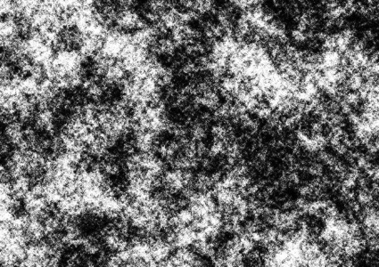

01-相机标定&标定板¶
由于廉价的相机会给图像带来极大的失真，主要是径向变形和切向变形，导致直线变的弯曲，离图像中心越远的像素，失真越严重。
为了得到正确的图像，首先需要纠正这些失真。为了找到所有这些参数，我们要做的是提供一些定义良好的图案的示例图像（棋盘格）。我们在其中找到一些特定点（棋盘上的格子的角点）。我们知道它在现实空间中的坐标，也知道它在图像中的坐标。利用这些数据，可以在后台通过解决一些数学问题，获得失真系数。
标定板¶
标定本质上是借助一个已知确定的空间关系（标定板），通过分析拍照的图片像素，逆向推出相机固有且真实的参数（内参）。
原则上，任何有合适表面特征的物体都可以作为标定物体，包括三维的物体，二维的图案。但是由于平面的更容易处理，并且相对三维物体来说，制作精准的二维标定位要简单的多。因此，我们常使用平面的标定板作为标定物，并通过多个不同角度和距离的图像提高精准度。
标定板一般使用平面上的规则图案，主要由以下几种类型：
- 棋盘格chessboard
最常用的标定图案：棋盘格。常用的规格有
角点 6 x 9 , 6 x 7 , 8 x 11
方格 20mm , 30mm
- 圆网格
圆网格分为对称圆网格和非对称圆网格，一般来说，无论是最终结果的质量，还是多次运行的结果之间的稳定性，非对称圆网格常常会优于棋盘格，进而其逐渐成为相机标定标准工具包的而一部分。
- 圆网格Circles
- 非对称圆网格Assymetric Circles
由指定半径，指定间隔的多个圆组成的图案，在一些情况下，圆形网格会得到比棋盘格更好的标定效果。

注意，此时的宽高读取有所不同，如下为11列，4行，即宽11，高4。
非对称圆网格也使用规则的圆阵列（左上），圆的中心类似于棋盘的角进行校准。 从透视图（右下角）看时，圆的变形是有规律且可预测的。
- 随机图案
由高度纹路化的随机图案组成的标定图案

- ArUco
由Augmented Reality 增强现实二维码组成的标定图案，由于每个方格都可以单独识别其ArUco图案，则即使大部分被遮挡，仍会有足够的标记点用来正确的标定。
- ChArUco
ChArUco = 棋盘 + ArUco
内部嵌有ArUco的棋盘格，原本每块白色区域由ArUco图案填充，同样允许大部分棋盘被遮挡，可以使角点的检测达到更高的精度，如下：
利用ArUco实现的增强现实
标定方式¶
在各个方向、位置面对摄像机，使相机拍照至少10张图片，在这些图片中查找角点，得到每张图所有的角点的坐标，结合其实际的宽高和个字大小，进行相机标定计算。